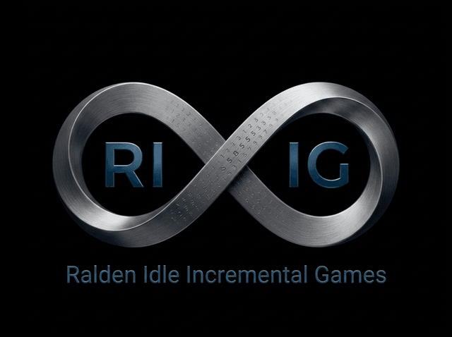
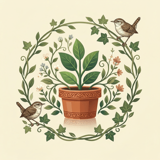

RIIG (Ralden Idle Incremental Games) est un studio indépendant qui développe des jeux mobiles du genre idle/incremental pour Android. Cette page centralise les jeux publiés ou en cours de test, ainsi que leurs informations légales (politiques de confidentialité).

Idle Plant Incremental propose de se connecter avec Google Play Jeux, uniquement pour les classements et pour sauvegarder la partie dans le propre compte Google du joueur. Cette connexion est facultative et RIIG ne reçoit jamais l'adresse e-mail du joueur (politique de confidentialité du jeu).
Une question, un souci de confidentialité, un bug à signaler ? riig.games@gmail.com
Conformément aux dispositions du Code de la consommation concernant « le processus de médiation des litiges de la consommation », après nous avoir sollicités et à défaut de réponse vous satisfaisant, vous avez la possibilité de recourir gratuitement à une procédure de médiation de la consommation auprès de :
CM2C
49 rue de Ponthieu
75 008 PARIS
Tél : 01 89 47 00 14
Site internet : https://www.cm2c.net/declarer-un-litige.php
Mail : litiges@cm2c.net
RIIG (Ralden Idle Incremental Games) is an independent studio building idle/incremental mobile games for Android. This page lists the games we've published or are currently testing, along with their legal information (privacy policies).
Idle Plant Incremental offers sign-in with Google Play Games, only for leaderboards and to save the game to the player's own Google account. Signing in is optional, and RIIG never receives the player's email address (the game's Privacy Policy).
A question, a privacy concern, a bug to report? riig.games@gmail.com
In accordance with the French Consumer Code provisions on the mediation of consumer disputes, if you have contacted us and are not satisfied with our answer, you may use a consumer mediation procedure free of charge with:
CM2C
49 rue de Ponthieu
75008 Paris, France
Phone: +33 1 89 47 00 14
Website: https://www.cm2c.net/declarer-un-litige.php
Email: litiges@cm2c.net